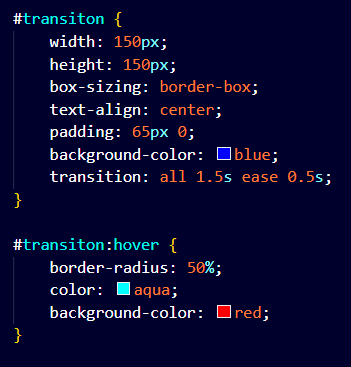

Alpha Channel
Sets the Opacity for a color.
OR
background-color: # ff ff ff ff;
Note :-
♠ In rgba alpha value varies from "0 to 1".
♠ In hexcode alpha value varies from "00 to ff"
Opacity
Sets the Opacity for the element.
CSS Transitions
Transitions enable you to define the transition between two states of an element.
Transition has 4 Property :-
- Transition-property :- What you want to change. (e.g.: none, all, width, color, background-color).
- Transition-duration :- How long the transition takes. (e.g.: 2s for 2 seconds, 2ms for 2 milisecond).
- Transition-timing-function :- The speed curve of the transition. (e.g.: ease, linear).
- Transition-delay :- Time to wait before starting the transition (optional).
Transition Short-hand :
index.html
style.css

Output :
CSS Transform
This property lets you rotate, scale, move, skew, or translate an element. This allows us to change the shape, size, and position of an element without disturbing the other elements around it.
-
Rotate
Rotates the element by a specified degree. (In clockwise direction).
Syntax :- transform: rotate(angle); transform: rotateX(angle); transform: rotateY(angle); transform: rotateZ(angle);transform: rotate(45deg); -
Scale
Scales the element in size. ('1' is the original size, '2' doubles the size.)
Syntax :- transform: scale(all-axis);, transform: scaleX(x-axis);, transform: scaleY(y-axis);, transform: scale(x,y);transform: scale(0.5, 2);
transform: scale(0.5); -
Translate
Moves the element along the X (horizontal) and Y (vertical) axes.
♠For 'x axis' the +ve value takes element to the left and negative value takes element to the right.
♠For 'y axis' the +ve value takes element to the up and negative value takes element to the down.
Syntax :- transform: translate(x, y);, transform: translateX(x);, transform: translateY(y);transform: translate (50px, 50px);
transform: translateX (10px);
transform: translateY (10px); -
Skew
Skews the element by the specified angles along the X and Y axes.
Syntax :- transform: skew(a);transform: skew(30deg);
Animation
To animate CSS elements
Syntax
from {font-size: 20px;}
to {font-size: 20px;}
}
Animation Properties
-
animation-name
Note
It is same as the defined animation name in animation syntax. For Exaple in above syntax - "myName". -
animation-duration
Note
defines how long an animation should take to complete.
If the animation-duration property is not specified, no animation will occur, because the default value is 0s (0 seconds). -
animation-timing-function
Note
specifies the speed curve of the animation.
It has following values :--
ease
Specifies an animation with a slow start, then fast, then end slowly (this is default).
-
linear
Specifies an animation with the same speed from start to end.
-
ease-in
Specifies an animation with a slow start.
-
ease-out
Specifies an animation with a slow end.
-
ease-in-out
Specifies an animation with a slow start and end.
-
cubic-bezier(n,n,n,n)
Lets you define your own values in a cubic-bezier function
-
ease
-
animation-delay
Note
specifies a delay for the start of an animation.
Can be in seconds(s) and miliseconds(ms). -
animation-iteration-count
Note
specifies the number of times an animation should run. -
animation-direction
Note
specifies whether an animation should be played forwards, backwards or in alternate cycles.
It has following values :--
normal
The animation is played as normal (forwards). This is default.
-
reverse
The animation is played in reverse direction (backwards).
-
alternate
The animation is played forwards first, then backwards.
-
alternate-reverse
The animation is played backwards first, then forwards.
-
normal
Animation Shorthand
% in CSS Animation
0% {font-size: 20px;} //animation at 0% stage.
50% {font-size: 30px;} //animation at 50% stage.
100% {font-size: 40px;} //animation at 100% stage.
Box Shadow
It adds shadow effects around an element's frame.
Syntax :-
box-shadow: x-offset y-offset Blur-Radius color;
box-shadow: x-offset y-offset Blur-Radius Spread-radius color;
- Horizontal offset (x-offset) :- Moves the shadow left or right..
- Vertical offset (y-offset) :- Moves the shadow up or down.
- Blur radius :- Controls how blurry the shadow is. The higher the number, the more blurred it will be..
- Spread radius :- Increases or decreases the size of the shadow.
- Color :- The color of the shadow.
OR
box-shadow: 2px 2px 2px 5px green;
Background
The background property in CSS is used to set the background of an element. You can control the background's color, image, position, size, and more.
Background Properties :-
-
background-color :-
Sets the background color.
Example :-
background-color: #ffffff; -
background-image :-
Sets the background image.
Syntax :-
background-image: url('www.absoluteimage.com' OR 'Ralative_Image_Address');Example :-
background-image: url(".. /somepath /..img. jpg"); -
background-repeat :-
Controls if/how the background image repeats. (e.g.: no-repeat, repeat-x).
- repeat :- The background image is repeated both vertically and horizontally. The last image will be clipped if it does not fit. This is default.
- repeat-x :- The background image is repeated only horizontally.
- repeat-y :- The background image is repeated only vertically.
- no-repeat :- The background-image is not repeated. The image will only be shown once.
- space :- The background-image is repeated as much as possible without clipping. The first and last image is pinned to either side of the element, and whitespace is distributed evenly between the images.
- round :- The background-image is repeated and squished or stretched to fill the space (no gaps).
background-repeat: repeat;
background-repeat: repeat-x;
background-repeat: no-repeat;
background-repeat: space;
background-repeat: round; -
background-position :-
Defines the starting position of the background image. (e.g.: center, top right).
Example :-
background-position: center top;background-position: 50% 50%;background-position: 50px 150px;Background-position Values :-
- left top
- left center
- left bottom
- right top
- right center
- right
- bottom
- center top
- center
- center bottom
-
background-size :- Defines the size of the background image. (e.g.: cover, contain).
- auto :- Default value. The background image is displayed in its original size.
- length :- Sets the width and height of the background image. The first value sets the width, the second value sets the height. If only one value is given, the second is set to "auto".
- percentage :- Sets the width and height of the background image in percent of the parent element. The first value sets the width, the second value sets the height. If only one value is given, the second is set to "auto".
- cover :- Resize the background image to cover the entire container, even if it has to stretch the image or cut a little bit off one of the edges.
- contain :- Resize the background image to make sure the image is fully visible.
background-size: auto;
background-size: contain;
background-size: cover;
background-size: 50%;
background-size: 30px;background-size: 50% 50%;background-size: 50px 150px;
Background Short-hand:
Position
♠ The position CSS property sets how an element is positioned in a document.
♠ the top, right, bottom and left properties determine the final location of positioned elements.
-
Static :-
- The default value. Elements are positioned in the normal document flow, with no special positioning.
- The top, right, bottom, left, and z-index properties have no effect.
- This is the default value.
position: static; -
relative :-
- The element is positioned relative to its normal position. You can move it using top, right, bottom and left, but it still takes up space in its original spot.
- the offset is relative to itself based on the values of top, right, bottom, and left.
position: relative;
top: 100px;
left: 100px; -
absolute :-
- The element is positioned relative to its nearest positioned ancestor (an ancestor with relative, absolute, or fixed position). It's removed from the normal document flow, so other elements will act as if it's not there.
- The element is removed from the normal document flow, and no space is created for the element in the page layout.
- It is positioned relative to its closest positioned ancestor, if any; otherwise, it is placed relative to the initial containing block.
Note :-We will always keep absolute element (div) inside the relative container (div). It will limit the absolute element positioning.
 position: absolute;
position: absolute;
top: 100px;
left: 100px; -
fixed :-
- The element is positioned relative to the browser window, so it stays in the same spot even when the page is scrolled.
- The element is removed from the normal document flow, and no space is created for the element in the page layout.
- It is positioned relative to the initial containing block established by the viewport.
position: fixed;
top: 100px;
left: 100px; -
sticky :-
The element switches between relative and fixed positioning depending on the user's scroll position. It "sticks" in place when a certain scroll position is reached.position: sticky;
top: 100px;
left: 100px;